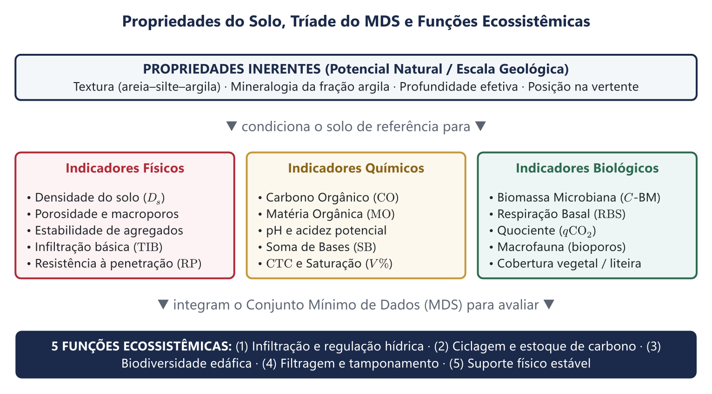
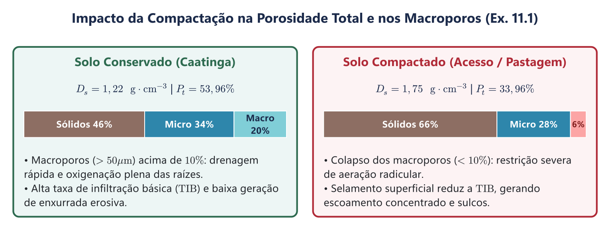
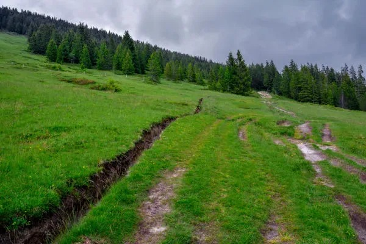
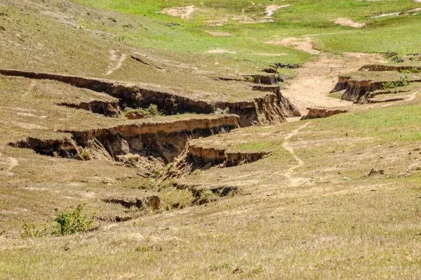
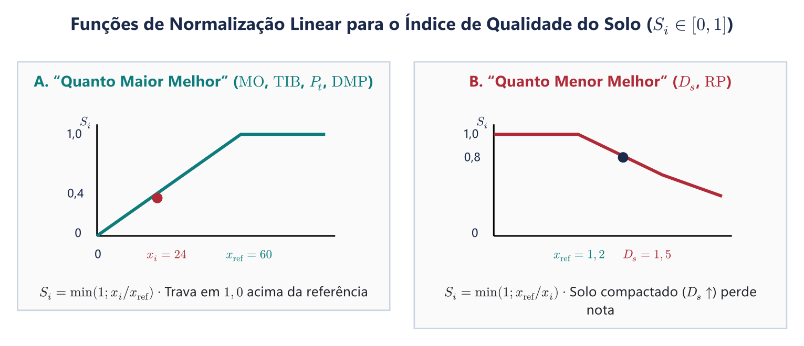
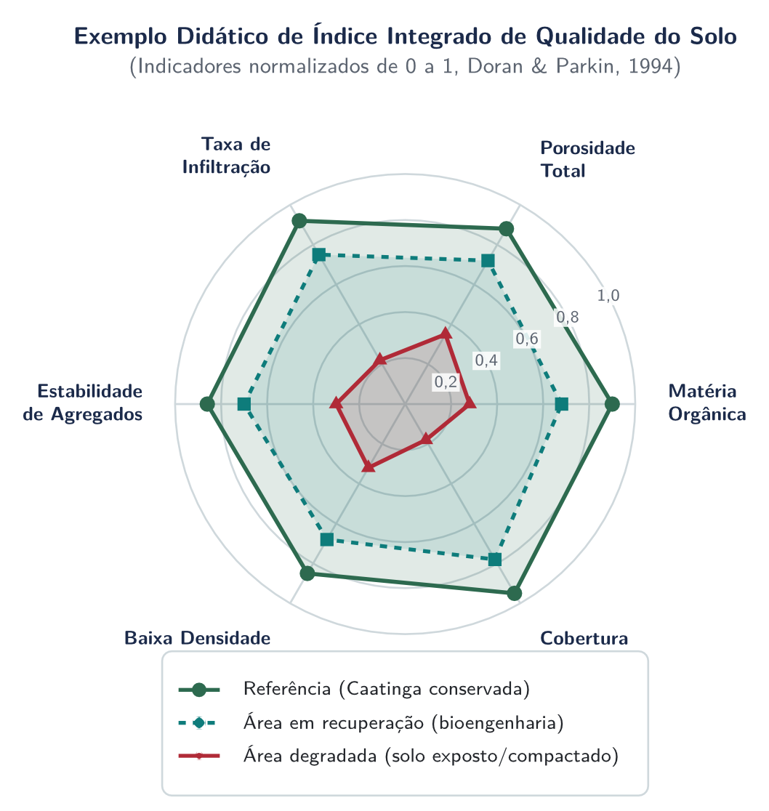

11 Indicadores de Qualidade do Solo e Funcionalidade Edáfica
Qualidade do solo expressa a capacidade de um solo específico funcionar, dentro dos limites de seu ecossistema e de seu uso, para regular o fluxo de água, ciclar nutrientes, estocar carbono e sustentar a atividade biológica. Um solo quimicamente adubado pode continuar degradado se estiver compactado, sem cobertura vegetal e incapaz de absorver a água da chuva. Por isso, a avaliação ambiental integra atributos físicos, químicos e biológicos, sempre comparados a uma área de referência na mesma classe de solo, profundidade e época de amostragem.
O capítulo desenvolve a interpretação de indicadores físicos, químicos e biológicos e a construção de índices de qualidade do solo (IQS). Ao longo da leitura, diagramas explicativos, fotografias de campo, gráficos e exemplos resolvidos acompanham cada conceito passo a passo.
A leitura retoma massa, volume, porosidade e matéria orgânica. Uma amostra indeformada preserva a organização natural dos poros necessária à determinação da densidade do solo, enquanto as análises químicas dependem do registro exato das unidades do laudo (\(CO\) ou \(MO\)) e dos critérios de preparo.
Vocabulário Técnico e Símbolos do Capítulo 11
Qualidade do Solo (QS). Capacidade de um solo funcionar, dentro dos limites do ecossistema natural ou manejado, para sustentar a produtividade biológica, manter a qualidade da água e do ar e suportar a saúde dos habitats (Karlen et al., 1997). MDS (Minimum Data Set), conjunto mínimo e não redundante de atributos físicos, químicos e biológicos capaz de representar a funcionalidade do solo com viabilidade analítica.
\(D_s\) e \(D_p\), densidade do solo (massa de solo seco dividida pelo volume total do anel, em \(\text{g}\cdot\text{cm}^{-3}\)) e densidade de partículas (massa de sólidos dividida apenas pelo volume das partículas minerais e orgânicas, usualmente \(2{,}65\text{ g}\cdot\text{cm}^{-3}\) para solos minerais quartzosos). \(P_t\), \(P_{\text{macro}}\) e \(P_{\text{micro}}\), porosidade total, macroporosidade e microporosidade (\(\%\) em volume). \(MO\) e \(CO\), matéria orgânica do solo e carbono orgânico total (\(\text{g}\cdot\text{kg}^{-1}\) ou \(\%\)), relacionados pelo fator de van Bemmelen (\(1{,}724\)). \(SB\), \(CTC\) e \(V\%\), soma de bases trocáveis (\(\text{cmol}_c\cdot\text{dm}^{-3}\)), capacidade de troca catiônica a pH \(7{,}0\) (\(\text{cmol}_c\cdot\text{dm}^{-3}\)) e saturação por bases (\(\%\)).
\(TIB\) e \(RP\), taxa de infiltração básica (\(\text{mm}\cdot\text{h}^{-1}\)) e resistência do solo à penetração (\(\text{MPa}\)). \(S_i\), \(w_i\) e \(\text{IQS}\), pontuação normalizada (\(0\) a \(1\)) do indicador \(i\), peso atribuído ao indicador (\(\sum w_i = 1\)) e Índice de Qualidade do Solo (\(0\) a \(1\)).
Conceito de Qualidade do Solo, Propriedades Inerentes e Tríade do MDS
Durante décadas, a ciência do solo concentrou-se na fertilidade química voltada à resposta imediata de lavouras a fertilizantes minerais. Na Análise Ambiental, essa abordagem isolada mostra-se insuficiente porque um solo rico em fósforo e potássio pode sofrer compactação severa sob tráfego de máquinas ou pisoteio, perdendo sua rede de poros maiores. Quando isso ocorre, a água da chuva encontra resistência na superfície, forma enxurrada erosiva, arrasta sedimentos para os rios e reduz a recarga do lençol freático.
A partir da década de 1990, Doran e Parkin (1994) e Karlen et al. (1997) consolidaram o conceito moderno de Qualidade do Solo, centrado em cinco funções ecossistêmicas interdependentes. O solo regula e particiona o fluxo de água (controlando infiltração, armazenamento e drenagem), sustenta a biodiversidade e a atividade microbiana, filtra e tampona poluentes orgânicos e inorgânicos, cicla nutrientes enquanto estoca carbono orgânico, e oferece suporte físico estável às raízes e às obras humanas. No Brasil, Vezzani e Mielniczuk (2009) destacam que essa qualidade emerge da interação contínua entre a arquitetura física dos agregados, a dinâmica da matéria orgânica e os organismos vivos, exigindo comparação direta com um solo de referência sob vegetação nativa na mesma classe pedológica e condição climática.
Para diagnosticar se um solo perdeu funcionalidade por ação humana ou se determinada característica é natural daquele ambiente, distingue-se o potencial natural herdado da condição dinâmica atual (Figura 11.1). As propriedades inerentes (textura areia-silte-argila, mineralogia da fração argila, profundidade efetiva e posição na vertente) mudam apenas em escalas geológicas e determinam qual solo de referência deve ser adotado. Já as propriedades dinâmicas (densidade, porosidade, matéria orgânica, infiltração e atividade microbiana) alteram-se em meses ou poucos anos conforme o manejo, formando o Conjunto Mínimo de Dados (MDS) dividido entre indicadores físicos, químicos e biológicos.

Indicadores Físicos (Arquitetura Porosa e Fluxo Hídrico)
Os atributos físicos governam a circulação de água, ar e raízes no perfil edáfico e respondem rapidamente à degradação mecânica observada em pastagens sobrepastoreadas, áreas agrícolas convencionais e acessos de obras civis ou parques eólicos.
A densidade do solo (\(D_s\)) mede a massa de solo seco contida em um volume conhecido de solo estruturado. Para preservar os poros originais sem esmagá-los, coleta-se uma amostra indeformada cravando um cilindro metálico de volume conhecido \(V_t\) (anel de Kopecky) no perfil, levando-o à estufa a \(105\,^\circ\text{C}\) até massa constante (\(m_s\)). Quanto maior a compactação imposta pelo tráfego ou pisoteio, mais partículas sólidas são comprimidas no mesmo volume e maior fica \(D_s\). Solos minerais conservados exibem tipicamente valores entre \(1{,}00\) e \(1{,}35\text{ g}\cdot\text{cm}^{-3}\) (menores em solos argilosos estruturados e ligeiramente maiores em solos arenosos); valores acima de \(1{,}55\)-\(1{,}65\text{ g}\cdot\text{cm}^{-3}\) em solos de textura média a argilosa costumam impor restrição severa ao crescimento radicular.
Para compreender o efeito real dessa compactação sobre a água e o ar, analisa-se a porosidade total (\(P_t\)) em conjunto com a separação entre macroporosidade e microporosidade (Figura 11.2). Em laboratório, a mesa de tensão aplica uma sucção de \(6\text{ kPa}\) ao anel saturado para separar duas famílias funcionais de poros: os macroporos (\(> 50\,\mu\text{m}\), drenados a \(6\text{ kPa}\)) garantem a aeração das raízes e a infiltração rápida durante chuvas intensas, enquanto os microporos (\(< 50\,\mu\text{m}\), que retêm água após \(6\text{ kPa}\)) armazenam umidade disponível às plantas. Sob pressão mecânica, os macroporos colapsam primeiro; quando a macroporosidade cai abaixo de \(10\%\) do volume total do solo, a oxigenação radicular torna-se crítica.

A integridade dessa arquitetura porosa depende da estabilidade de agregados em água, medida pelo Diâmetro Médio Ponderado (DMP) em peneiramento úmido, que indica a resistência dos torrões ao impacto das gotas de chuva (splash), prevenindo o selamento superficial. Quando o selamento ocorre ou os macroporos diminuem, cai abruptamente a Taxa de Infiltração Básica (\(TIB\)), medida em campo com infiltrômetro de anéis concêntricos (\(\text{mm}\cdot\text{h}^{-1}\)), convertendo chuvas moderadas em escoamento superficial concentrado e sulcos erosivos (Figura 11.3). Complementando essa leitura, a Resistência do solo à penetração (\(RP\)), medida com penetrômetro (\(\text{MPa}\)), quantifica o esforço mecânico enfrentado pelas raízes; na capacidade de campo, valores acima de \(2{,}0\)-\(2{,}5\text{ MPa}\) impõem impedimento físico severo.

As equações físicas abaixo permitem calcular a densidade do solo, a porosidade total e as frações de macro e microporos a partir das pesagens do anel volumétrico saturado (\(m_{\text{sat}}\)), drenado a \(6\text{ kPa}\) (\(m_{6\text{kPa}}\)) e seco em estufa (\(m_s\)), adotando \(\rho_{\text{água}} = 1{,}0\text{ g}\cdot\text{cm}^{-3}\):
\[ D_s = \frac{m_s}{V_t} \quad (\text{g}\cdot\text{cm}^{-3}) \qquad\qquad P_t = \left(1 - \frac{D_s}{D_p}\right) \times 100\% \]
\[ P_{\text{micro}} = \frac{m_{6\text{kPa}} - m_s}{\rho_{\text{água}} \cdot V_t}\times 100\% \qquad\qquad P_{\text{macro}} = \frac{m_{\text{sat}} - m_{6\text{kPa}}}{\rho_{\text{água}} \cdot V_t}\times 100\% \]
O Exemplo 11.1 aplica diretamente essas expressões aos dados representados na Figura 11.2.
Situação e dados. Durante campanha da disciplina CHF662 na camada \(0\)-\(10\text{ cm}\) (\(V_t = 100\text{ cm}^3\); \(D_p = 2{,}65\text{ g}\cdot\text{cm}^{-3}\)), uma amostra sob Caatinga conservada apresentou massa seca \(m_{s,1} = 122\text{ g}\) e outra na borda compactada de um acesso eólico apresentou \(m_{s,2} = 175\text{ g}\).
Cálculo passo a passo. Para a Caatinga conservada, \(D_{s,1} = \frac{122}{100} = 1{,}22\text{ g}\cdot\text{cm}^{-3}\) e \(P_{t,1} = \left(1 - \frac{1{,}22}{2{,}65}\right)\times 100\% = 53{,}96\%\). Para o acesso compactado, \(D_{s,2} = \frac{175}{100} = 1{,}75\text{ g}\cdot\text{cm}^{-3}\) e \(P_{t,2} = \left(1 - \frac{1{,}75}{2{,}65}\right)\times 100\% = 33{,}96\%\).
Interpretação. A compactação elevou \(D_s\) em \(0{,}53\text{ g}\cdot\text{cm}^{-3}\) e eliminou exatamente \(20{,}00\) pontos percentuais de porosidade (\(37{,}1\%\) de perda relativa), colapsando prioritariamente os macroporos de drenagem rápida.
Quando o diagnóstico físico inclui medições em mesa de tensão, quantifica-se separadamente quanto dessa porosidade total permanece disponível para aeração radicular, conforme detalhado no Exemplo 11.4.
Situação e dados. Uma amostra indeformada (\(V_t = 100\text{ cm}^3\); \(\rho_{\text{água}} = 1{,}0\text{ g}\cdot\text{cm}^{-3}\)) em área sob bioengenharia registrou massa saturada \(m_{\text{sat}} = 174\text{ g}\), massa após equilíbrio a \(6\text{ kPa}\) de \(m_{6\text{kPa}} = 158\text{ g}\) e massa seca \(m_s = 128\text{ g}\).
Cálculo passo a passo. Como cada \(1\text{ g}\) de água ocupa \(1\text{ cm}^3\) de poro:
\[ P_t^{\text{sat}} = \frac{174 - 128}{100}\times 100\% = 46{,}0\% \qquad P_{\text{micro}} = \frac{158 - 128}{100}\times 100\% = 30{,}0\% \qquad P_{\text{macro}} = \frac{174 - 158}{100}\times 100\% = 16{,}0\% \]
Interpretação. A soma confere (\(30{,}0\% + 16{,}0\% = 46{,}0\%\)), e a macroporosidade de \(16{,}0\%\) supera o limiar crítico de \(10\%\), indicando boa aeração radicular aliada à retenção hídrica.
Na leitura de campo dos indicadores físicos, dois erros frequentes comprometem os laudos ambientais: comparar solos de texturas diferentes sem referência local e medir resistência à penetração sem registrar a umidade.
Equívoco frequente. Classificar um Neossolo Quartzarênico arenoso (\(D_s = 1{,}45\text{ g}\cdot\text{cm}^{-3}\)) como degradado comparando-o a um Latossolo argiloso conservado (\(D_s = 1{,}05\text{ g}\cdot\text{cm}^{-3}\)).
Correção técnica. Solos arenosos possuem naturalmente maior densidade e menor \(CTC\) do que solos argilosos bem estruturados. A área de referência sob vegetação nativa deve pertencer à mesma classe de solo, textura e posição geomorfológica da área diagnosticada.
No Semiárido, a sazonalidade hídrica amplia drasticamente a coesão aparente do solo seco, exigindo cuidado adicional nas leituras de penetrômetro.
Equívoco frequente. Medir \(RP\) na estação seca no Semiárido, obter valores acima de \(4{,}0\text{ MPa}\) e diagnosticar compactação antrópica irreversível.
Correção técnica. A resistência mecânica à penetração aumenta exponencialmente à medida que o solo seca, devido à coesão entre partículas e à sucção matricial. Leituras de penetrômetro são comparáveis apenas quando obtidas sob umidade controlada (próxima à capacidade de campo) ou acompanhadas do teor gravimétrico de umidade.
Indicadores Químicos (Matéria Orgânica, Acidez e Troca Catiônica)
Os atributos químicos determinam a disponibilidade de nutrientes, o poder tampão e a estabilidade coloidal do solo. A Matéria Orgânica (\(MO\)) e o Carbono Orgânico Total (\(CO\)) integram física, química e biologia porque cimentam agregados, elevam a retenção de água e fornecem a maior parte das cargas negativas da \(CTC\) em solos tropicais intemperizados. Como os métodos laboratoriais (Walkley-Black ou combustão seca) quantificam diretamente o carbono orgânico (\(CO\)), estima-se a matéria orgânica multiplicando \(CO\) pelo fator de van Bemmelen (\(1{,}724\)), baseado na convenção clássica de que a matéria orgânica humificada contém aproximadamente \(58\%\) de carbono em massa (\(1 / 0{,}58 \approx 1{,}724\)). As expressões abaixo relacionam \(CO\), \(MO\) e o estoque de carbono (\(EC\), em \(\text{Mg C}\cdot\text{ha}^{-1}\)) na camada de espessura \(h_{\text{m}}\) (adotando \(1\text{ g}\cdot\text{cm}^{-3} = 1\text{ Mg}\cdot\text{m}^{-3}\)):
\[ CO = \frac{MO}{1{,}724} \quad \Longleftrightarrow \quad MO = CO \times 1{,}724 \qquad\qquad EC = \left(\frac{CO_{\text{g/kg}}}{1000}\right) \cdot D_s \cdot (10.000 \cdot h_{\text{m}}) \]
O Exemplo 11.2 demonstra como padronizar laudos expressos em grandezas distintas e quantificar a perda de carbono por hectare.
Situação e dados. Na camada \(h = 0{,}20\text{ m}\), um laudo reportou \(CO_A = 18{,}0\text{ g}\cdot\text{kg}^{-1}\) sob Caatinga preservada (\(D_{s,A} = 1{,}25\text{ g}\cdot\text{cm}^{-3}\)), enquanto outro laboratório reportou \(MO_B = 12{,}068\text{ g}\cdot\text{kg}^{-1}\) em pastagem degradada adjacente (\(D_{s,B} = 1{,}60\text{ g}\cdot\text{cm}^{-3}\)).
Cálculo passo a passo. Pelo fator de van Bemmelen, \(MO_A = 18{,}0 \times 1{,}724 = 31{,}032\text{ g}\cdot\text{kg}^{-1}\) e \(CO_B = 12{,}068 / 1{,}724 = 7{,}00\text{ g}\cdot\text{kg}^{-1}\). Em \(1\text{ ha}\), o volume da camada é \(V_{\text{ha}} = 10.000 \times 0{,}20 = 2.000\text{ m}^3\cdot\text{ha}^{-1}\). Na Área A, a massa de solo é \(2.000 \times 1{,}25 = 2.500\text{ Mg}\cdot\text{ha}^{-1}\) e \(EC_A = 2.500 \times 0{,}018 = 45{,}00\text{ Mg C}\cdot\text{ha}^{-1}\). Na Área B, a massa é \(2.000 \times 1{,}60 = 3.200\text{ Mg}\cdot\text{ha}^{-1}\) e \(EC_B = 3.200 \times 0{,}007 = 22{,}40\text{ Mg C}\cdot\text{ha}^{-1}\), indicando perda de \(22{,}60\text{ Mg C}\cdot\text{ha}^{-1}\) (\(-50{,}2\%\)).
Interpretação. Mesmo com maior massa de solo em \(20\text{ cm}\) na Área B devido à compactação (\(3.200\) vs. \(2.500\text{ Mg}\)), a degradação já eliminou metade do estoque original de carbono.
Na leitura comparativa de análises laboratoriais, trocar carbono orgânico por matéria orgânica sem conversão prévia distorce qualquer diagnóstico ambiental.
Equívoco frequente. Comparar diretamente um laudo expresso em \(CO\) (\(\text{g}\cdot\text{kg}^{-1}\)) com outro expresso em \(MO\) (\(\text{g}\cdot\text{kg}^{-1}\)) sem conversão prévia.
Correção técnica. A matéria orgânica contém carbono, oxigênio, hidrogênio e nitrogênio; portanto, \(MO\) é sempre numericamente maior que \(CO\) (\(MO = 1{,}724 \times CO\)). Padronize todas as amostras na mesma grandeza antes de comparar resultados ou calcular estoques de carbono.
O potencial hidrogeniônico (pH) controla a solubilidade de nutrientes e a toxicidade do alumínio trocável (\(Al^{3+}\)) abaixo de pH \(5{,}5\). No Semiárido Baiano, Luvissolos e Neossolos pouco intemperizados tendem a apresentar pH levemente ácido a neutro (\(6{,}0\)-\(7{,}2\)), enquanto Latossolos profundos de tabuleiros costumam ser mais ácidos (\(4{,}5\)-\(5{,}5\)). Associando a Soma de Bases (\(SB\)) à acidez potencial (\(H^+ + Al^{3+}\)), obtém-se a \(CTC\) a pH \(7{,}0\) e a Saturação por Bases (\(V\%\)). Solos com \(V\% \ge 50\%\) são eutróficos (alta fertilidade natural), enquanto solos com \(V\% < 50\%\) são distróficos (baixa fertilidade natural):
\[ SB = Ca^{2+} + Mg^{2+} + K^+ + Na^+ \qquad CTC = SB + (H^+ + Al^{3+}) \qquad V\% = \frac{SB}{CTC}\times 100\% \]
O Exemplo 11.3 contrasta essas duas condições pedológicas na Bahia.
Situação e dados. Compare dois laudos (\(0\)-\(20\text{ cm}\), valores em \(\text{cmol}_c\cdot\text{dm}^{-3}\)): Solo 1 (Luvissolo Crômico sob Caatinga no Semiárido: \(Ca^{2+}=5{,}40\); \(Mg^{2+}=2{,}60\); \(K^+=0{,}45\); \(Na^+=0{,}15\); \(H^++Al^{3+}=2{,}40\)) e Solo 2 (Latossolo Amarelo sob pastagem degradada nos Tabuleiros Costeiros: \(Ca^{2+}=1{,}20\); \(Mg^{2+}=0{,}60\); \(K^+=0{,}15\); \(Na^+=0{,}05\); \(H^++Al^{3+}=4{,}00\)).
Cálculo passo a passo. Para o Solo 1, \(SB_1 = 8{,}60\), \(CTC_1 = 11{,}00\text{ cmol}_c\cdot\text{dm}^{-3}\) e \(V\%_1 = (8{,}60/11{,}00)\times 100\% = \mathbf{78{,}18\%}\) (eutrófico). Para o Solo 2, \(SB_2 = 2{,}00\), \(CTC_2 = 6{,}00\text{ cmol}_c\cdot\text{dm}^{-3}\) e \(V\%_2 = (2{,}00/6{,}00)\times 100\% = \mathbf{33{,}33\%}\) (distrófico).
Interpretação. O resultado reflete a pedogênese regional: a menor lixiviação no Semiárido preserva bases trocáveis, enquanto nos tabuleiros úmidos a lixiviação intensa e a perda de matéria orgânica reduzem \(SB\), \(CTC\) e \(V\%\).
Indicadores Biológicos e Dinâmica Degradada em Campo
Os indicadores biológicos costumam responder às perturbações iniciais e às ações de recuperação antes que os estoques totais de carbono ou a densidade exibam mudanças mensuráveis. O Carbono da Biomassa Microbiana (\(C\text{-BM}\)) representa a fração viva da matéria orgânica (fungos, bactérias e actinomicetos, geralmente \(1\%\) a \(4\%\) do \(CO\) total) e reage em poucos meses ao manejo. Analisada junto à Respiração Basal do Solo (\(RBS\)), que mede a liberação de \(\text{CO}_2\) pelo metabolismo microbiano, a razão \(q\text{CO}_2 = RBS / C\text{-BM}\) (quociente metabólico) funciona como termômetro de estresse ecológico: valores elevados revelam que os microrganismos gastam mais energia para sobreviver do que para formar nova biomassa.
Completam esse eixo biológico a riqueza de macrofauna edáfica (minhocas, térmitas e formigas que constroem bioporos) e a cobertura vegetal com serapilheira. Quando uma pastagem perde cobertura viva e proteção superficial, a temperatura do solo sobe, a biota entra em colapso e o solo descoberto evolui rapidamente para ravinas (Figura 11.4).

Essa perda progressiva de cobertura e agregação acelera o ciclo de degradação física e hídrica da bacia (Figura 11.5).

Normalização Linear, Cálculo do IQS e Visualização Multivariada
Como cada indicador possui unidade própria (\(\text{g}\cdot\text{kg}^{-1}\), \(\text{mm}\cdot\text{h}^{-1}\), \(\text{g}\cdot\text{cm}^{-3}\)), não é possível somá-los diretamente. A normalização linear converte cada valor bruto \(x_i\) em uma nota adimensional \(S_i\) entre \(0\) e \(1\), respeitando o sentido ecológico do atributo (Figura 11.6). Para atributos do tipo “quanto maior melhor” (\(MO\), \(P_t\), \(TIB\), \(DMP\)), aplica-se \(S_i = \min(1;\; x_i / x_{\text{ref}})\), travando a nota máxima em \(1{,}0\). Para atributos do tipo “quanto menor melhor” (\(D_s\) e \(RP\)), inverte-se a razão, \(S_i = \min(1;\; x_{\text{ref}} / x_i)\), de modo que solos mais compactados recebam notas menores.

Agregando as pontuações normalizadas \(S_i\), calcula-se o Índice de Qualidade do Solo simples ou ponderado:
\[ \text{IQS}_{\text{simples}} = \frac{1}{n}\sum_{i=1}^{n} S_i \qquad \text{ou} \qquad \text{IQS}_{\text{ponderado}} = \sum_{i=1}^{n} w_i \, S_i \quad \left(\text{com } \sum_{i=1}^{n} w_i = 1\right) \]
A integração dessas notas em um gráfico radar preserva simultaneamente a visão global (área do polígono proporcional ao IQS) e o diagnóstico individual de cada gargalo nos eixos recolhidos próximo ao centro (Figura 11.7).

Observando os três cenários plotados (Figura 11.7), a Caatinga conservada (referência) apresenta escores entre \(0{,}85\) e \(0{,}95\), resultando em \(\text{IQS} = (0{,}90+0{,}88+0{,}92+0{,}86+0{,}85+0{,}95)/6 = \mathbf{0{,}893}\) (qualidade muito alta). A área em recuperação com bioengenharia alcança escores entre \(0{,}68\) e \(0{,}78\), com \(\text{IQS} = \mathbf{0{,}718}\) (trajetória ascendente, com matéria orgânica e densidade ainda em consolidação). Já a área degradada exibe escores colapsados entre \(0{,}18\) (cobertura vegetal) e \(0{,}35\) (porosidade total), produzindo \(\text{IQS} = \mathbf{0{,}275}\) (qualidade crítica, exigindo cobertura superficial e descompactação biológica).
O Exemplo 11.5 executa passo a passo as duas fórmulas de normalização e o cálculo completo do IQS.
Situação e dados. Para avaliar uma encosta em recuperação ambiental frente a uma mata de referência, um grupo utilizou quatro indicadores: \(MO\) (avaliada \(= 16{,}0\); referência \(= 32{,}0\text{ g}\cdot\text{kg}^{-1}\); \(w_1 = 0{,}30\)), \(TIB\) (avaliada \(= 24{,}0\); referência \(= 60{,}0\text{ mm}\cdot\text{h}^{-1}\); \(w_2 = 0{,}30\)), \(D_s\) (avaliada \(= 1{,}50\); referência \(= 1{,}20\text{ g}\cdot\text{cm}^{-3}\); \(w_3 = 0{,}20\)) e \(DMP\) (avaliada \(= 1{,}25\); referência \(= 2{,}50\text{ mm}\); \(w_4 = 0{,}20\)).
Cálculo passo a passo. Normalização individual (escala \(0\) a \(1\)):
\[ S_{MO} = \frac{16{,}0}{32{,}0} = 0{,}50 \qquad S_{TIB} = \frac{24{,}0}{60{,}0} = 0{,}40 \qquad S_{D_s} = \frac{1{,}20}{1{,}50} = 0{,}80 \quad (\text{razão invertida}) \qquad S_{DMP} = \frac{1{,}25}{2{,}50} = 0{,}50 \]
Agregação simples e ponderada:
\[ \text{IQS}_{\text{simples}} = \frac{0{,}50 + 0{,}40 + 0{,}80 + 0{,}50}{4} = 0{,}550 \qquad \text{IQS}_{\text{ponderado}} = (0{,}30 \times 0{,}50) + (0{,}30 \times 0{,}40) + (0{,}20 \times 0{,}80) + (0{,}20 \times 0{,}50) = 0{,}530 \]
Interpretação. O \(\text{IQS}_{\text{ponderado}}\) (\(0{,}530\)) ficou abaixo do simples (\(0{,}550\)) porque os maiores pesos (\(0{,}30\)) recaíram sobre infiltração e matéria orgânica, apontando a infiltração básica (\(S_{TIB} = 0{,}40\)) como gargalo prioritário para manejo.
Ao executar a normalização em planilhas, um erro comum é aplicar a razão direta em indicadores onde valores maiores representam degradação física.
Equívoco frequente. Normalizar \(D_s\) dividindo o valor da área degradada (\(1{,}75\)) pelo da referência (\(1{,}20\)), obtendo escore superior a \(1{,}0\) e premiando um solo severamente compactado.
Correção técnica. Para densidade do solo e resistência à penetração, valores maiores indicam pior qualidade física. Aplica-se obrigatoriamente a função “quanto menor melhor”, \(S_{D_s} = \min(1;\; D_{s,\text{ref}} / D_{s,\text{avaliado}})\).
Amostragem, Referência e Materiais Audiovisuais de Apoio
A comparação entre área manejada e referência exige condições pedológicas e topográficas compatíveis, separando faixas compactadas por tráfego de entrelinhas vegetadas. Amostras compostas atendem bem a certas análises químicas de rotina, ao passo que propriedades físicas (\(D_s\) e macroporosidade) exigem preservação de unidades indeformadas com réplicas, seguindo protocolos como o Manual de métodos de análise de solo da Embrapa.
Para consolidar a visualização desses indicadores em campo e laboratório, recomenda-se assistir aos vídeos selecionados na disciplina: o vídeo Análise da Saúde do Solo (~7 min) sintetiza matéria orgânica, densidade, porosidade e biologia edáfica; o vídeo Saúde do Solo: Qualidade Biológica aprofunda os indicadores biológicos tropicais; e o vídeo Degradação dos Solos (~17 min) ilustra processos de lixiviação, erosão, laterização e salinização.
Exercícios de fixação
Nível Básico (Conceitos de Funcionalidade Edáfica e MDS)
Explique por que o conceito contemporâneo de Qualidade do Solo (Doran; Parkin, 1994; Karlen et al., 1997) é mais abrangente do que a noção tradicional de fertilidade química agrícola.
Diferencie propriedades inerentes de propriedades dinâmicas do solo, citando dois exemplos de cada grupo.
Qual é o significado físico e matemático do fator de van Bemmelen (\(1{,}724\)) na conversão entre carbono orgânico total (\(CO\)) e matéria orgânica (\(MO\))?
Por que a macroporosidade é mais sensível à compactação do solo do que a porosidade total (\(P_t\)), e qual é o seu limiar crítico de aeração radicular?
Explique por que o Carbono da Biomassa Microbiana (\(C\text{-BM}\)) e o quociente metabólico (\(q\text{CO}_2\)) são indicadores precoces valiosos no monitoramento de áreas degradadas em recuperação.
Nível Intermediário (Cálculos Físicos, Químicos e IQS)
Uma amostra indeformada coletada em anel volumétrico de \(100\text{ cm}^3\) apresentou massa de solo seco em estufa de \(159\text{ g}\). Considerando densidade de partículas \(D_p = 2{,}65\text{ g}\cdot\text{cm}^{-3}\), calcule a densidade do solo (\(D_s\)) e a porosidade total (\(P_t\)).
Um solo sob Caatinga em regeneração apresentou teor de matéria orgânica \(MO = 25{,}86\text{ g}\cdot\text{kg}^{-1}\) e densidade do solo \(D_s = 1{,}30\text{ g}\cdot\text{cm}^{-3}\) na camada \(0\)-\(20\text{ cm}\). Calcule o teor de carbono orgânico total (\(CO\), em \(\text{g}\cdot\text{kg}^{-1}\)) usando o fator de van Bemmelen e o estoque de carbono (\(EC\), em \(\text{Mg C}\cdot\text{ha}^{-1}\)) nessa camada.
Um laudo químico forneceu os seguintes valores (em \(\text{cmol}_c\cdot\text{dm}^{-3}\)), \(Ca^{2+} = 4{,}20\); \(Mg^{2+} = 1{,}80\); \(K^+ = 0{,}30\); \(Na^+ = 0{,}10\); e \(H^+ + Al^{3+} = 3{,}60\). Calcule \(SB\), \(CTC\) e \(V\%\), classificando o solo como eutrófico ou distrófico.
Em ensaio de mesa de tensão com anel de \(100\text{ cm}^3\) (\(\rho_{\text{água}} = 1{,}0\text{ g}\cdot\text{cm}^{-3}\)), obtiveram-se as massas (sem a tara do anel), \(m_{\text{sat}} = 165\text{ g}\), \(m_{6\text{kPa}} = 157\text{ g}\) e \(m_s = 130\text{ g}\). Calcule \(P_t^{\text{sat}}\), \(P_{\text{micro}}\) e \(P_{\text{macro}}\), indicando se há risco físico à aeração das raízes.
Calcule o \(\text{IQS}_{\text{simples}}\) de uma parcela degradada a partir dos três indicadores abaixo e identifique o indicador de menor desempenho,
\(MO\) (maior melhor), parcela \(= 20\text{ g}\cdot\text{kg}^{-1}\); referência \(= 40\text{ g}\cdot\text{kg}^{-1}\).
\(TIB\) (maior melhor), parcela \(= 36\text{ mm}\cdot\text{h}^{-1}\); referência \(= 60\text{ mm}\cdot\text{h}^{-1}\).
\(D_s\) (menor melhor), parcela \(= 1{,}60\text{ g}\cdot\text{cm}^{-3}\); referência \(= 1{,}20\text{ g}\cdot\text{cm}^{-3}\).
Nível Aplicado (Questões Objetivas A-E)
A respeito do Conjunto Mínimo de Dados (MDS) para avaliação da qualidade do solo (Doran; Parkin, 1994; Vezzani; Mielniczuk, 2009), assinale a alternativa correta,
Deve conter apenas variáveis químicas de rotina, pois atributos físicos e biológicos não se alteram com o manejo da terra.
Deve integrar um número enxuto e representativo de indicadores físicos, químicos e biológicos sensíveis às mudanças de uso da terra.
Exige a medição simultânea de todos os 50 atributos laboratoriais existentes, independentemente de redundância ou custo.
Dispensa a adoção de áreas de referência sob vegetação nativa por utilizar valores absolutos idênticos para qualquer textura de solo.
Restringe-se ao estudo de solos hidromórficos de várzea.
Um solo mineral com densidade de partículas \(D_p = 2{,}65\text{ g}\cdot\text{cm}^{-3}\) e densidade do solo \(D_s = 1{,}325\text{ g}\cdot\text{cm}^{-3}\) apresenta porosidade total (\(P_t\)) exatamente igual a,
\(25{,}0\%\).
\(40{,}0\%\).
\(45{,}0\%\).
\(50{,}0\%\).
\(60{,}0\%\).
Sobre a normalização de indicadores no cálculo do Índice de Qualidade do Solo (IQS), é correto afirmar que,
Indicadores como taxa de infiltração básica e matéria orgânica seguem a função “quanto menor melhor”.
A normalização converte grandezas com unidades diferentes para uma escala adimensional comum (como \(0\) a \(1\)), possibilitando a agregação matemática.
A densidade do solo deve ser normalizada pela razão \(D_{s,\text{avaliado}} / D_{s,\text{referência}}\) para que solos mais compactados recebam notas maiores.
O uso de pesos diferenciados (\(w_i\)) é proibido em índices de qualidade ambiental.
Um IQS igual a \(0{,}25\) indica funcionalidade edáfica superior à da área de referência.
Se uma amostra de solo apresenta teor de carbono orgânico total \(CO = 10{,}0\text{ g}\cdot\text{kg}^{-1}\), o teor estimado de matéria orgânica (\(MO\)) pelo fator de van Bemmelen (\(1{,}724\)) é,
\(5{,}80\text{ g}\cdot\text{kg}^{-1}\).
\(10{,}00\text{ g}\cdot\text{kg}^{-1}\).
\(15{,}80\text{ g}\cdot\text{kg}^{-1}\).
\(17{,}24\text{ g}\cdot\text{kg}^{-1}\).
\(27{,}24\text{ g}\cdot\text{kg}^{-1}\).
Na interpretação do gráfico radar de qualidade do solo (Figura 11.7), uma área degradada que apresenta valores normalizados muito baixos em cobertura vegetal (\(0{,}18\)) e taxa de infiltração (\(0{,}22\)) sinaliza prioritariamente,
Alta resiliência física da superfície do solo frente a chuvas intensas.
Predomínio de drenagem profunda com risco nulo de escoamento superficial.
Forte vulnerabilidade ao impacto da gota de chuva, selamento superficial e geração de enxurrada erosiva.
Excesso de matéria orgânica humificada na camada superficial.
Equivalência funcional plena em relação à Caatinga conservada.
Questões de aplicação
Atenção às Armadilhas em Questões de Solos
Em provas de Geografia e concursos ambientais, dois detalhes costumam decidir questões, verificar se a tabela fornece Carbono Orgânico (\(CO\)) ou Matéria Orgânica (\(MO\)) antes de multiplicar ou dividir por \(1{,}724\), e observar o sentido da normalização (“maior melhor” vs. “menor melhor”) em indicadores como \(D_s\) e \(RP\).
[Questão Autoral, Estilo ENADE / Geografia] Dois talhões localizados sobre a mesma classe de solo no Semiárido Baiano foram avaliados quanto à funcionalidade edáfica. O Talhão X (Caatinga conservada) exibiu \(D_s = 1{,}20\text{ g}\cdot\text{cm}^{-3}\), \(P_{\text{macro}} = 18\%\), \(MO = 30\text{ g}\cdot\text{kg}^{-1}\) e \(TIB = 65\text{ mm}\cdot\text{h}^{-1}\). O Talhão Y (área de empréstimo de terra após obra viária) apresentou \(D_s = 1{,}72\text{ g}\cdot\text{cm}^{-3}\), \(P_{\text{macro}} = 6\%\), \(MO = 7\text{ g}\cdot\text{kg}^{-1}\) e \(TIB = 9\text{ mm}\cdot\text{h}^{-1}\). Com base nesses resultados, analise as asserções,
I. O Talhão Y encontra-se fisicamente degradado e sob elevada suscetibilidade ao escoamento superficial concentrado e à erosão hídrica.
PORQUE
II. A perda de matéria orgânica e o colapso da macroporosidade abaixo de \(10\%\) comprometem a estabilidade dos agregados e reduzem drasticamente a taxa de infiltração básica do solo.A respeito dessas asserções, assinale a opção correta,
As asserções I e II são proposições verdadeiras, e a II é uma justificativa correta da I.
As asserções I e II são proposições verdadeiras, mas a II não é uma justificativa correta da I.
A asserção I é uma proposição verdadeira, e a II é uma proposição falsa.
A asserção I é uma proposição falsa, e a II é uma proposição verdadeira.
As asserções I e II são proposições falsas.
[Questão Autoral, Estilo Concurso Analista Ambiental] Em um diagnóstico pedológico para elaboração de PRAD, a análise química da camada superficial de uma área degradada revelou Soma de Bases \(SB = 3{,}20\text{ cmol}_c\cdot\text{dm}^{-3}\) e Capacidade de Troca Catiônica a pH \(7{,}0\) de \(CTC = 8{,}00\text{ cmol}_c\cdot\text{dm}^{-3}\). Com base nesses valores, a saturação por bases (\(V\%\)) e a classificação química do solo são, respectivamente,
\(25{,}0\%\), eutrófico.
\(40{,}0\%\), distrófico.
\(40{,}0\%\), eutrófico.
\(60{,}0\%\), distrófico.
\(60{,}0\%\), eutrófico.
[Questão Autoral, Estilo Concurso Perito / Geógrafo Ambiental] Sobre a escolha e o uso de indicadores biológicos na avaliação da qualidade do solo (Vezzani; Mielniczuk, 2009; Karlen et al., 1997), assinale a alternativa INCORRETA,
A fauna edáfica (como minhocas, formigas e térmitas) contribui para a formação de bioporos que aumentam a infiltração de água e a aeração do perfil.
O carbono da biomassa microbiana tende a responder mais rapidamente a mudanças de uso da terra do que o estoque total de carbono orgânico.
Valores muito elevados de quociente metabólico (\(q\text{CO}_2\)) em áreas degradadas podem indicar estresse sobre a comunidade microbiana, que despende maior proporção de carbono em respiração de manutenção.
A cobertura vegetal e a serapilheira modulam a temperatura e a umidade do solo, favorecendo a atividade biológica em ambientes tropicais e semiáridos.
Indicadores biológicos dispensam totalmente a avaliação de densidade do solo e infiltração, pois a presença de micro-organismos elimina a compactação mecânica em poucos dias.
Gabarito comentado
Resoluções Completas, Exercícios de Fixação (1 a 15)
A fertilidade química clássica foca na disponibilidade imediata de nutrientes para produção vegetal. Já a Qualidade do Solo avalia o conjunto das funções ecossistêmicas (regulação hídrica, filtragem de poluentes, estocagem de carbono, sustentação da biodiversidade e resistência à erosão), exigindo integração de atributos físicos, químicos e biológicos.
Propriedades inerentes. Dependem dos fatores de formação e variam pouco em escala humana (por exemplo, textura do solo e mineralogia da fração argila). Propriedades dinâmicas. Respondem em curto e médio prazo ao manejo e à degradação (por exemplo, densidade do solo, matéria orgânica, estabilidade de agregados e taxa de infiltração básica).
O fator \(1{,}724\) deriva da premissa clássica de que a matéria orgânica do solo contém aproximadamente \(58\%\) de carbono em sua composição mássica (\(1 / 0{,}58 = 1{,}7241\dots\)). Assim, \(MO = 1{,}724 \times CO\) e \(CO = MO / 1{,}724\).
Sob pressão mecânica (máquinas, pisoteio), os poros maiores (macroporos, \(>50\,\mu\text{m}\)) são os primeiros a colapsar, muitas vezes transformando-se em microporos; logo, \(P_{\text{macro}}\) cai muito mais intensamente do que \(P_t\). O limiar crítico clássico para aeração adequada das raízes é de \(\mathbf{10\%}\) do volume do solo.
O \(C\text{-BM}\) representa a fração viva e ativa do carbono do solo, reagindo em poucos meses ao manejo antes que alterações sejam mensuráveis no \(CO\) total. O \(q\text{CO}_2\) (\(RBS / C\text{-BM}\)) complementa essa leitura ao revelar se a biota está em equilíbrio eficiente ou sob estresse energético.
Passo a passo, \(D_s = 159\text{ g} / 100\text{ cm}^3 = \mathbf{1{,}59\text{ g}\cdot\text{cm}^{-3}}\). \(P_t = (1 - 1{,}59 / 2{,}65)\times 100\% = (1 - 0{,}60)\times 100\% = \mathbf{40{,}0\%}\).
Passo a passo, \(CO = 25{,}86 / 1{,}724 = \mathbf{15{,}00\text{ g}\cdot\text{kg}^{-1}}\) (ou \(0{,}015\text{ kg C}\cdot\text{kg}^{-1}\) solo). Volume de solo na camada \(0\)-\(20\text{ cm}\) em \(1\text{ ha}\), \(10.000\text{ m}^2 \times 0{,}20\text{ m} = 2.000\text{ m}^3\). Massa de solo, \(2.000\text{ m}^3 \times 1{,}30\text{ Mg}\cdot\text{m}^{-3} = 2.600\text{ Mg}\cdot\text{ha}^{-1}\). Estoque de carbono, \(EC = 2.600 \times 0{,}015 = \mathbf{39{,}00\text{ Mg C}\cdot\text{ha}^{-1}}\).
Passo a passo, \(SB = 4{,}20 + 1{,}80 + 0{,}30 + 0{,}10 = \mathbf{6{,}40\text{ cmol}_c\cdot\text{dm}^{-3}}\). \(CTC = 6{,}40 + 3{,}60 = \mathbf{10{,}00\text{ cmol}_c\cdot\text{dm}^{-3}}\). \(V\% = (6{,}40 / 10{,}00)\times 100\% = \mathbf{64{,}0\%}\). Como \(V\% \ge 50\%\), o solo é classificado como eutrófico.
Passo a passo, \(P_t^{\text{sat}} = (165 - 130)/100 \times 100\% = \mathbf{35{,}0\%}\). \(P_{\text{micro}} = (157 - 130)/100 \times 100\% = \mathbf{27{,}0\%}\). \(P_{\text{macro}} = (165 - 157)/100 \times 100\% = \mathbf{8{,}0\%}\). Como \(P_{\text{macro}} = 8{,}0\% < 10\%\), há risco físico de restrição à aeração radicular e à drenagem rápida.
Passo a passo, \(S_{MO} = 20 / 40 = 0{,}50\) (maior melhor); \(S_{TIB} = 36 / 60 = 0{,}60\) (maior melhor); \(S_{D_s} = 1{,}20 / 1{,}60 = 0{,}75\) (menor melhor). \(\text{IQS}_{\text{simples}} = (0{,}50 + 0{,}60 + 0{,}75) / 3 = 1{,}85 / 3 \approx \mathbf{0{,}617}\). O indicador de menor desempenho é a matéria orgânica (\(S_{MO} = 0{,}50\)).
Gabarito, (B). O MDS seleciona um conjunto enxuto, sensível e multidisciplinar (físico, químico e biológico), sempre calibrado em relação a um solo de referência local.
Gabarito, (D). \(P_t = (1 - 1{,}325 / 2{,}65)\times 100\% = (1 - 0{,}50)\times 100\% = \mathbf{50{,}0\%}\).
Gabarito, (B). A normalização coloca indicadores heterogêneos na mesma escala adimensional (\(0\) a \(1\)). (A) inverte o sentido de \(TIB\) e \(MO\); (C) inverte o sentido de \(D_s\); (D) é falsa pois índices ponderados são amplamente usados; (E) é falsa pois \(0{,}25\) representa qualidade muito baixa.
Gabarito, (D). \(MO = 10{,}0 \times 1{,}724 = \mathbf{17{,}24\text{ g}\cdot\text{kg}^{-1}}\).
Gabarito, (C). Cobertura vegetal mínima (\(0{,}18\)) expõe o solo ao impacto direto das gotas, agravando o selamento e derrubando a infiltração (\(0{,}22\)), o que amplifica o escoamento superficial erosivo.
Resoluções Completas, Questões ENADE e Concursos (16 a 18)
Gabarito, (A). Ambas as asserções são verdadeiras e mantêm nexo causal rigoroso, a elevação da densidade (\(1{,}72\text{ g}\cdot\text{cm}^{-3}\)), o colapso da macroporosidade (\(6\% < 10\%\)) e a queda acentuada da matéria orgânica reduzem drasticamente a infiltração (\(9\text{ mm}\cdot\text{h}^{-1}\)), tornando o Talhão Y altamente suscetível ao escoamento superficial erosivo.
Gabarito, (B). \(V\% = (3{,}20 / 8{,}00)\times 100\% = \mathbf{40{,}0\%}\). Como \(V\% < 50\%\), o solo é distrófico.
Gabarito, (E). A alternativa (E) é incorreta porque a recuperação biológica da estrutura física do solo compactado ocorre gradualmente (meses a anos) e requer diagnóstico conjunto com indicadores físicos (\(D_s\), \(P_{\text{macro}}\), \(TIB\) e \(RP\)).
Síntese conceitual
Funcionalidade edáfica. A qualidade do solo mede sua capacidade de infiltrar água, ciclar nutrientes, estocar carbono e sustentar vida, avaliada sempre contra um solo de referência da mesma classe pedológica. Tríade do MDS. Indicadores físicos (\(D_s\), \(P_t\), \(P_{\text{macro}}\), \(DMP\), \(TIB\), \(RP\)), químicos (\(CO\), \(MO = 1{,}724 \cdot CO\), pH, \(SB\), \(CTC\), \(V\%\)) e biológicos (\(C\text{-BM}\), \(RBS\), \(q\text{CO}_2\), fauna e cobertura vegetal). Cálculo do IQS. Padronize cada atributo entre \(0\) e \(1\) respeitando a direção (“maior melhor” \(= x_i/x_{\text{ref}}\); “menor melhor” \(= x_{\text{ref}}/x_i\)) e agregue via média simples ou ponderada, mantendo o gráfico radar para evidenciar gargalos individuais.
Autoavaliação
Marque V (Verdadeiro) ou F (Falso) e confira o gabarito,
( ) Quanto maior a densidade do solo (\(D_s\)) para uma mesma densidade de partículas (\(D_p\)), menor será a porosidade total (\(P_t\)).
( ) Pelo fator de van Bemmelen (\(1{,}724\)), um solo com \(17{,}24\text{ g}\cdot\text{kg}^{-1}\) de matéria orgânica possui aproximadamente \(10{,}0\text{ g}\cdot\text{kg}^{-1}\) de carbono orgânico total.
( ) Um solo com saturação por bases \(V\% = 72\%\) é classificado como distrófico devido à predominância de alumínio trocável.
( ) No cálculo do IQS, a densidade do solo (\(D_s\)) segue a função “quanto menor melhor”, enquanto a taxa de infiltração básica (\(TIB\)) segue “quanto maior melhor”.
Gabarito da verificação da aprendizagem, 1-V | 2-V | 3-F (\(V\% \ge 50\%\) caracteriza solo eutrófico) | 4-V.